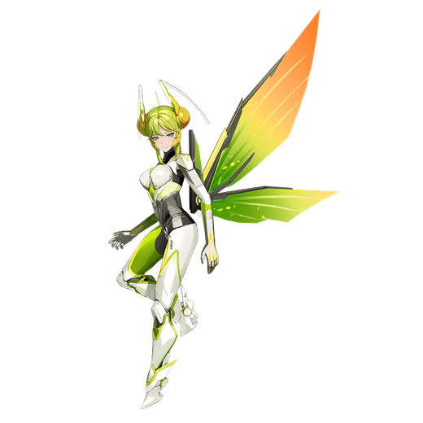

基本データ
- コスト
- 1.5
- 体力
- 未入力
- 赤ロック
- 27
- 動画
- 登録動画

Move Table
| 射撃 | 名称 | 弾数 | 威力 | 備考 |
|---|---|---|---|---|
| メイン射撃 | 速射粒子砲 | 60 | 22~266 | 射角が狭いが集弾性は良いバルカン |
| サブ射撃 | 光学迷彩 | 1 | - | 敵の攻撃誘導を切る時限強化 |
| サブ格闘 | マンティス突撃 | 3 | - | 弾数性特殊移動 |
| 格闘派生 オーキッドジャイロ | - | 60~270 | - | 判定出しっぱ+自由移動可能 |
| 格闘 | 名称 | 入力 | 弾数 | 威力 | 備考 |
|---|---|---|---|---|---|
| 通常格闘 | マンティスブレード | NNN | - | - | 517 サブ射派生 |
| オーキッドスピン | N→サ射 | - | - | 767 | 5凸解禁。火力派生 サブ格派生 |
| オーキッドリープ | N→サ格 | - | - | 464 | スタン斬り抜け |
| 横格闘 | マンティスブレード | - | 横N | 502 サブ射派生 | |
| オーキッドスピン | 横→サ射 | - | - | 752 | N格と同様 サブ格派生 |
| オーキッドリープ | 横→サ格 | - | - | 449 | |
| 前格闘 | マンティスブレード | 前 | - | 363 | 掴み始動 |
| バーストアタック | 名称 | - | 威力 | ||
| バーストアタック | 幽霊螂 | - | 988/900/959/871 | 飛び道具始動の乱舞 |